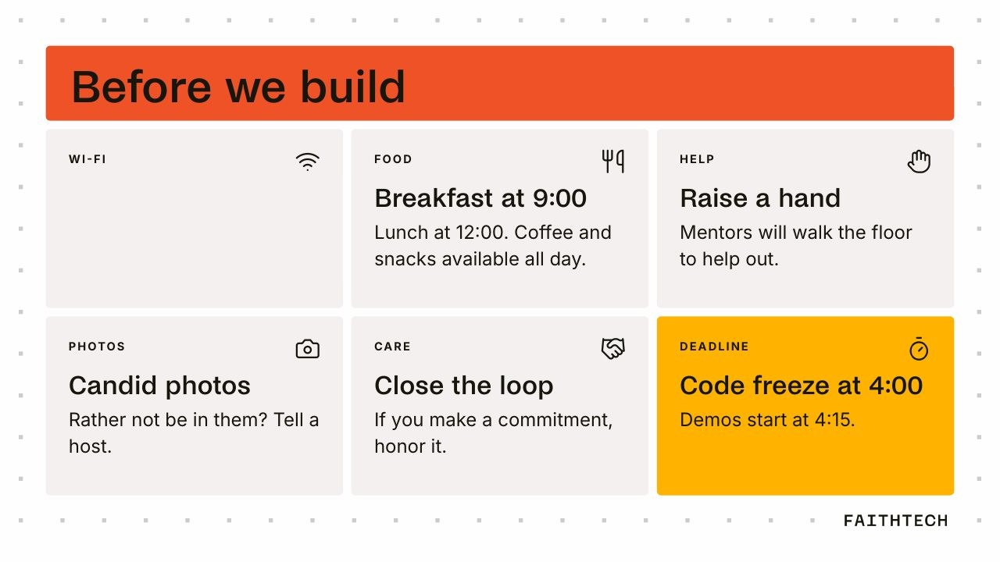
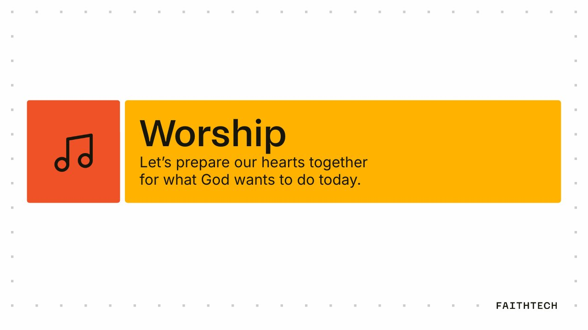

On-site parking

Lots A, B and C around the venue.
FaithTech
One day to build for the church: lament, discern, build and steward.
Sat 24 Oct 2026 · 9:00 am – 6:00 pm · The Robertson Triangle, 3390 Robertson Pl, Los Angeles
A copy of the hub, saved Mon 26 Oct 2026. It opens without the app; links to other sites need a connection. Times are in America/Los_Angeles.
Prayer pause at 2:00.
The Robertson Triangle, 3390 Robertson Pl, Los Angeles
Enter from the Robertson Pl courtyard; the hall is on your left.
Arrive by 8:45 to park on site.
Lots A, B and C around the venue.

Free street parking and six public garages.
Track 1 · Primary focus
Help a newcomer find their way into a church family from their phone.
Track 2
Make it easy to tell what God has done, safely.
Track 3
Walk with someone in the weeks after baptism.
Write the code today.
Push to a public repo.
Submit your projectGive feedback
Code freeze at 4:00 pm
Judges score each team 1 to 5 on each criterion.
| Number | Criterion | The question | Scores a 5 when |
|---|---|---|---|
| 01 | Redemptive potential (40%) | Does it bring people closer to Jesus and each other? | It clearly serves the church’s mission. |
| 02 | Usable by the end user (30%) | Could the person it is for use it today? | A first-time user finishes the task unaided. |
| 03 | Technical viability (30%) | Does it work, and could it keep working? | It runs end to end on real devices. |
Honor 01 · Top score
Honor 02 · Mentors’ pick
Engineering lead
Product designer
FaithTech



Help us bring hackathons to more cities.
Gifts fund city events, hackathons and the Create Cycle.